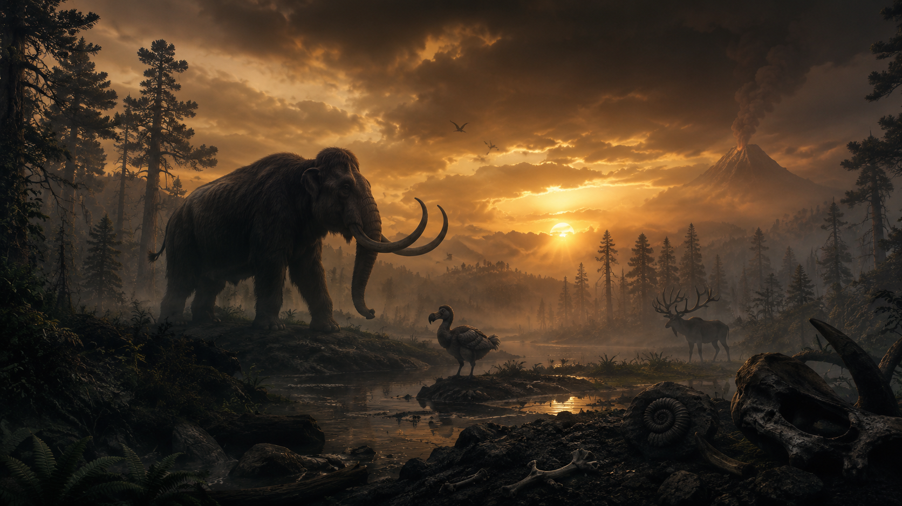

A natural history archive
Every species
leaves an echo.
Meet the extraordinary animals we lost.
Understand the ones
we can still protect.
A little curiosity.
A deeper connection.
in this collection
Never forgotten.
Still worth protecting.
01 / The collection
Extraordinary lives.
Unforgettable stories.
From the Ice Age to the forests of today,
every story offers a
different way
to see our living world.
No species found.
Try another name, place, or a different filter.
A curated collection, including selected subspecies. Dates are approximate where evidence is incomplete. Wildlife imagery is illustrative.
02 / Through time
The world changed.
So did their stories.
Four moments. Thousands of years.
Select a chapter to travel
through time.
Selected moments, not a time scale. Extinction dates are estimates, not exact timestamps.
03 / The bigger picture
An extinction is rarely
a single story.
Pressures overlap. Understanding them
is the first step toward
changing them.
Five major human-driven pressures shape modern biodiversity loss.
Endangered doesn’t mean gone
The next chapter
is still unwritten.
We can’t change the stories that ended.
We can pay attention
to the ones still unfolding.
04 / A little fieldwork
Curiosity looks
good on you.
Three questions from the collection.
See what stays with you.